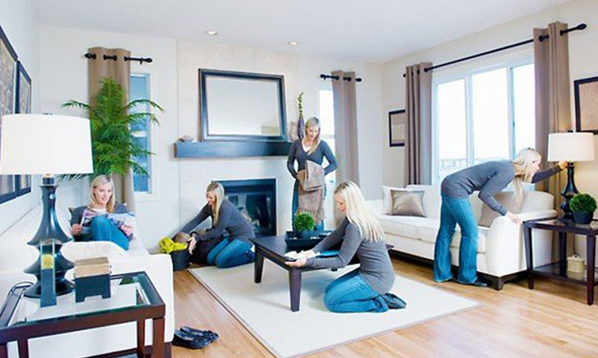

MCO is known as Movement Control Order to determine whether efforts to break the Covid-19 chain of infection are successful or not. Its effectiveness will surely depend, among others, on the people’s level of discipline to comply with the MCO, whereby the public is continuously being urged to stay at home, frequently wash their hands and adopt social distancing.
There are lots of thing we could do during the Lockdown. Since the government asked all people to stay at home, I've come up with several activities on how I'm going to spend my spare time with useful things.
First thing first, I'm gonna clean up the house to ensure that it is always tidy and neat. People tend to say that I have an OCD which drag me to do all things perfectly. Keep clean and tidy!
Next, playing game is a MUST! Games are one of my favorite routine during MCO since we are not supposed to involved any activities outside. Besides, it can make us forget how much time has passed by. Hoping that MCO gonna end soon, I rather sleep all day waiting but it is not worth it so playing games.. Why not :)
Other than cleaning the house, playing games, I love to cook and try new recipes that I found on Facebook such as Dalgona coffee, popia, viral Milo cake and wanton. In this page, I would like to share how to make wanton. I found this recipe on facebook and I will tell you how to do it here. Ok let's start.
Prepare the ingredients as listed below:
As shown below is a video on how you guys can study to wrap the wonton.
After finished all the wrapping, you guys can start to cook with fried or boiled.
Overall that is how I spent a day in my life during MCO. It looks simple yet it is very tiring because the desire to go outside is very strong but we must help our government to cleanse the country to stay at home, keep hygiene and stay safe. To all frontliners, thank you for protecting our country to become better.